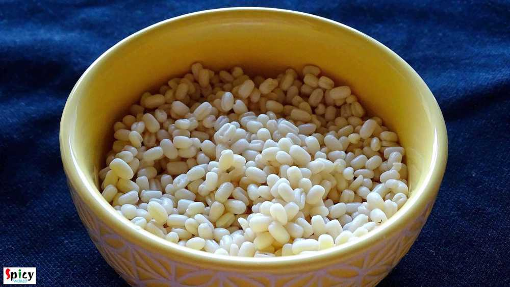
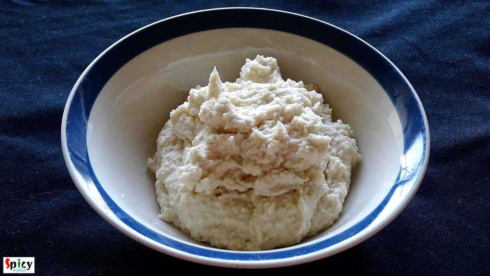
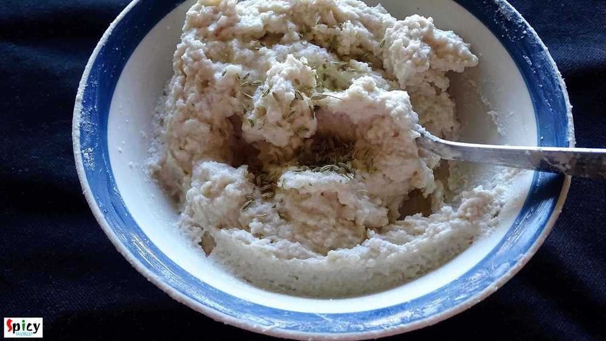
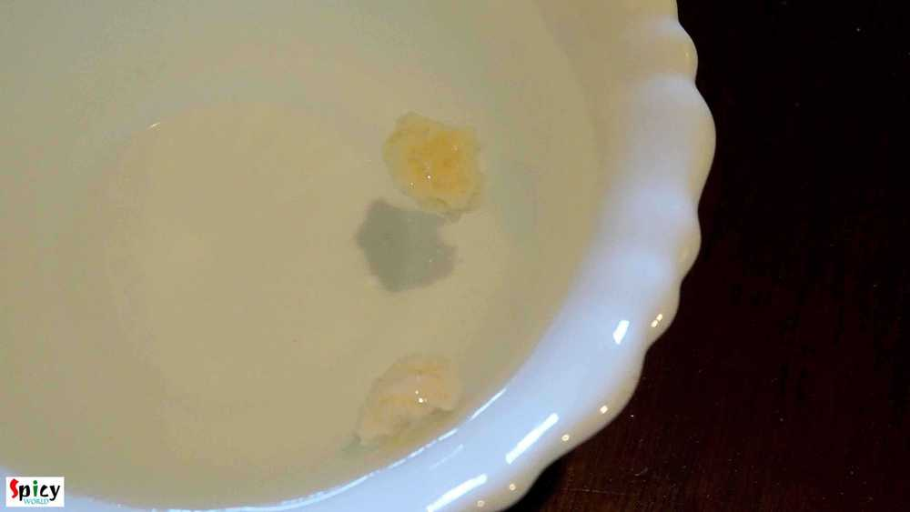
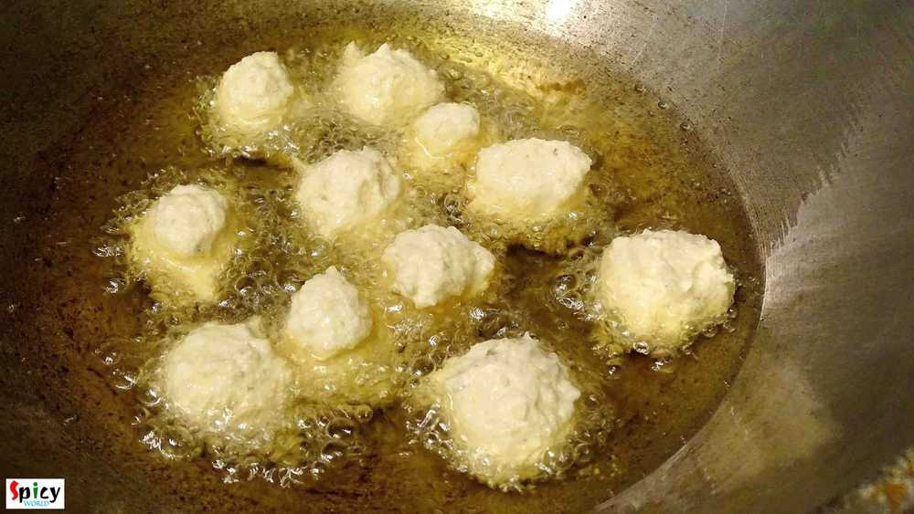
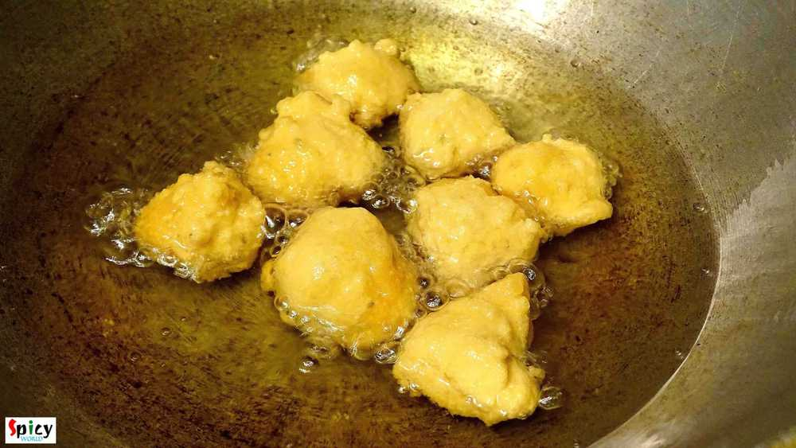
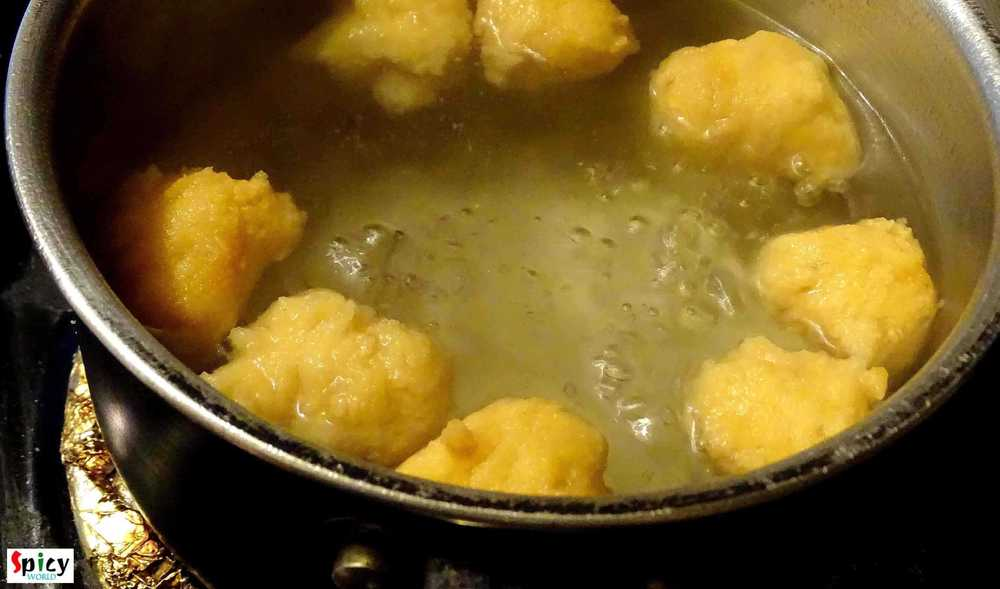
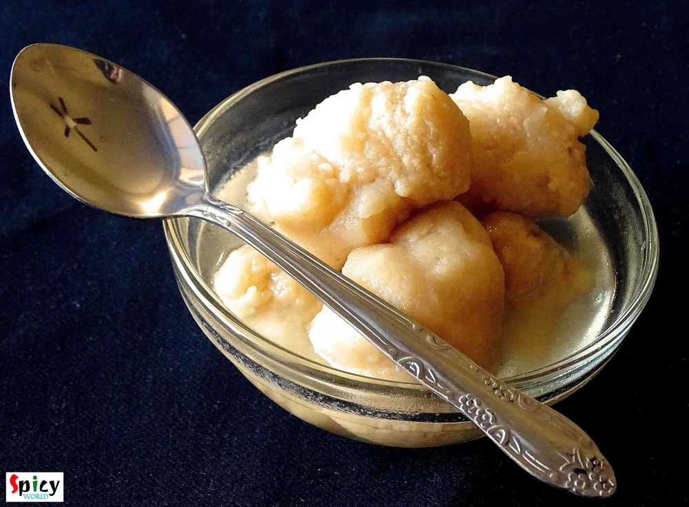

Simple and Easy Recipes
Ros Bora / Dumplings in sugar syrup
© 2016 Spicy World, Published on: Jan 14, 2016
Spring is coming my friend, spring is coming. In Bengal we celebrate 'makar sankranti' and I know that every part of india celebrates the same festival with different name and food. From childhood, I love this festival. My grandma and ma makes so many varities of food like 'pithe', 'dudh puli', 'bhaja pithe', 'soru chakli', 'ashke', 'patisapta', 'kholachi' etc with their love and affection. Each and every dish becomes perfect. 'Ros bora' is a traditional Bengali sweets and you can enjoy them in any occasion. My father is a big fan of 'ros bora'. The dish needs a little effort but the end result will satisfy you. I made this sweet dish today to celebrate 'makar sankranti'. Hope you will all enjoy this festival with lots of sweets.

Ingredients
- 1 cup of urad dal / biuli dal.
- Pinch of salt.
- 1/2 Teaspoon of soda-bi-carb.
- 1 Teaspoon of crushed fennel seeds / mouri.
- 3 cups of water.
- 2 cups of sugar.
- 2 green cardamoms.
- White oil for frying.

Steps
Soak the urad dal overnight or 8 hours in water.
Then drain the water and wash the dal properly.
Put the dal in grinder with very little water. Grind it to a smooth paste.
Use water as less as possible.
Put the paste in a bowl.
Beat the dal with your hand or spoon in circular motion for 15-20 minutes. You have to be fast.
You can also use electric beater.
After beating, the color of the dal will become more white.
Add salt, soda-bi-carb and crushed fennel seeds in the dal.
Again beat it for 6-7 minutes.
Add a drop of daal in a bowl of water. If it floats, then your batter is ready to fry.
Heat lots of oil in kadai. Oil should be medium hot.
Add little portion of batter in oil. You have to be very gentle while handling the batter.
Fry them till they become golden in color.
To make syrup, boil 3 cups of water in a saucepan.
Add 2 cups of sugar and 2 cardamoms. You can also add molasses.
Boil it for few minutes and your sugar syrup is ready.
Remove the dumplings from oil and immediately add them in boiling syrup.
Keep them in syrup for 30 minutes.
Then they are ready to serve.
Your ros bora is ready ...
Enjoy them warm with your loved ones ...
")